Introduction
This is the fifth post in the series Elegant Data Visualization with ggplot2. In the previous post, we learnt about text annotations. In this post, we will build scatter plots by applying everything we have learnt so far.
- build scatter plots
- modify point
- color
- fill
- alpha
- shape
- size
- fit regression line
Libraries, Code & Data
We will use the following libraries in this post:
All the data sets used in this post can be found here and code can be downloaded from here.
Basic Plot
ggplot(mtcars) +
geom_point(aes(disp, mpg))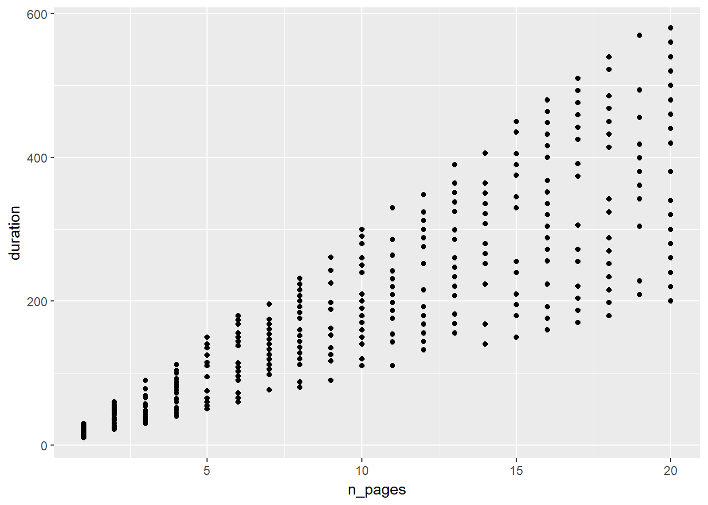
Jitter
ggplot(mtcars) +
geom_point(aes(disp, mpg), position = 'jitter')Jitter
ggplot(mtcars) +
geom_jitter(aes(disp, mpg))Aesthetics
Now let us modify the aesthetics of the points. There are two ways:
- map them to variables using the
aes()function - specify values
Map Color to Variable (Categorical)
ggplot(mtcars) +
geom_point(aes(disp, mpg, color = factor(cyl)),
position = 'jitter')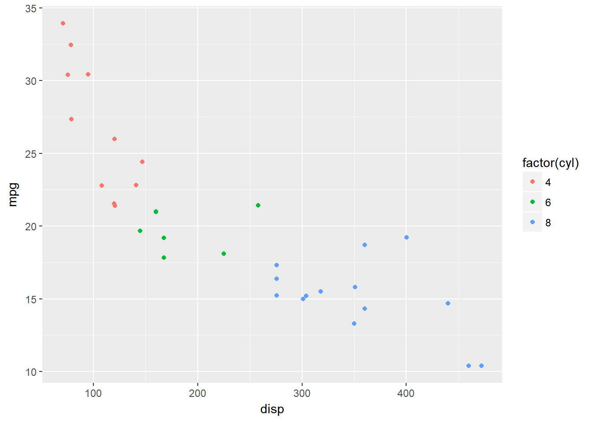
Map Color to Variable (Continuous)
ggplot(mtcars) +
geom_point(aes(disp, mpg, color = hp),
position = 'jitter')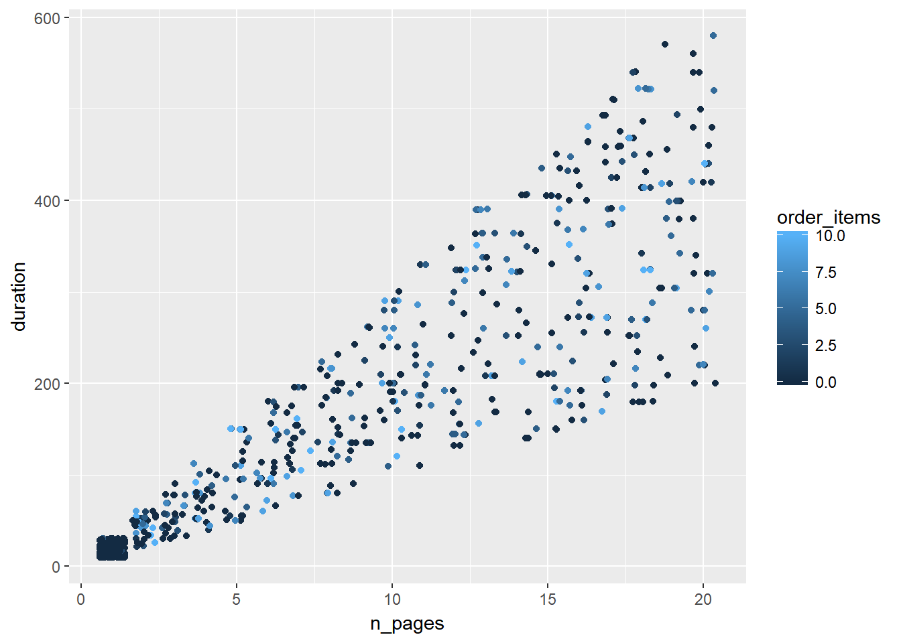
Specify Value for Color
ggplot(mtcars) +
geom_point(aes(disp, mpg), color = 'blue',
position = 'jitter')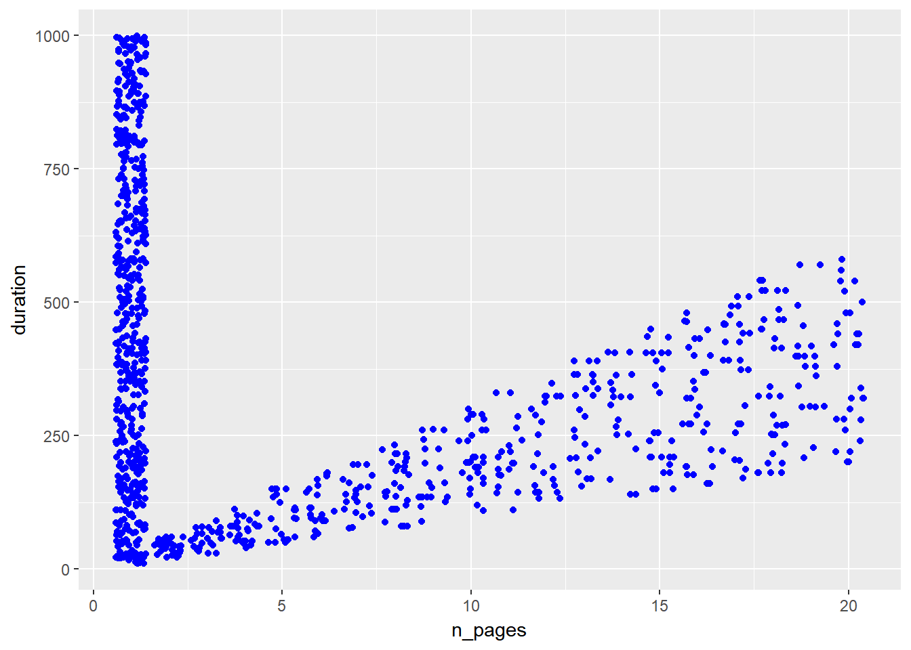
Specify Value for Alpha
ggplot(mtcars) +
geom_point(aes(disp, mpg), color = 'blue', alpha = 0.4,
position = 'jitter')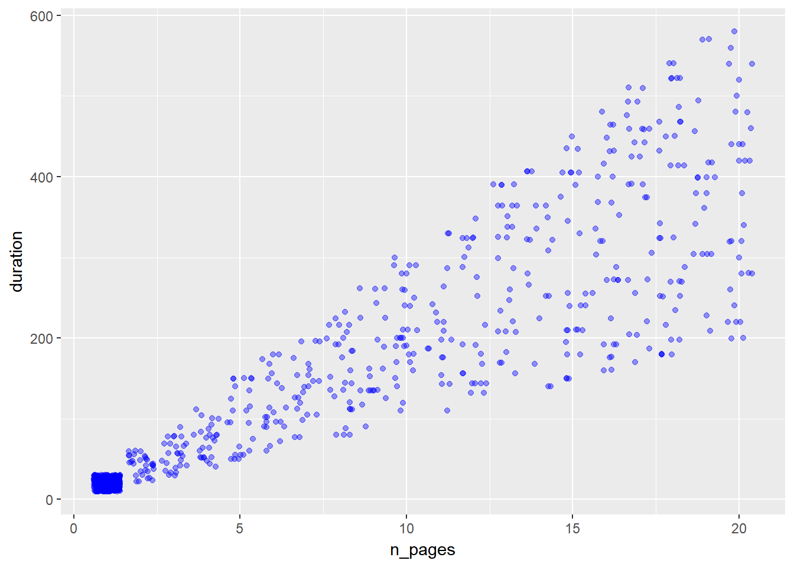
Map Shape to Variable
ggplot(mtcars) +
geom_point(aes(disp, mpg, shape = factor(cyl)),
position = 'jitter')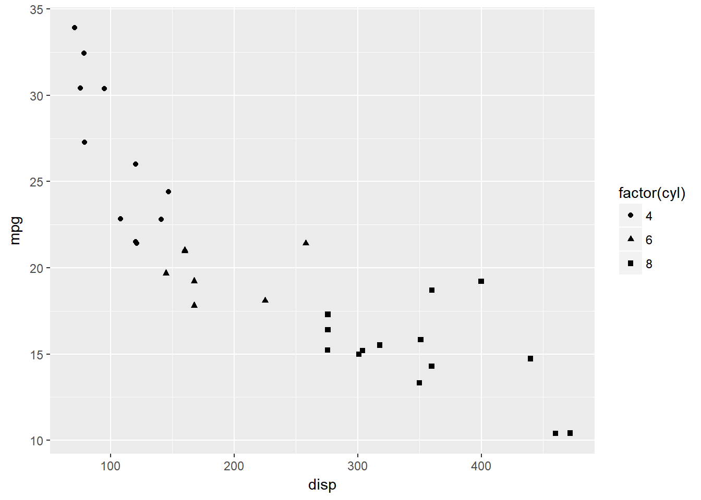
Specify Value for Shape
ggplot(mtcars) +
geom_point(aes(disp, mpg), shape = 3,
position = 'jitter')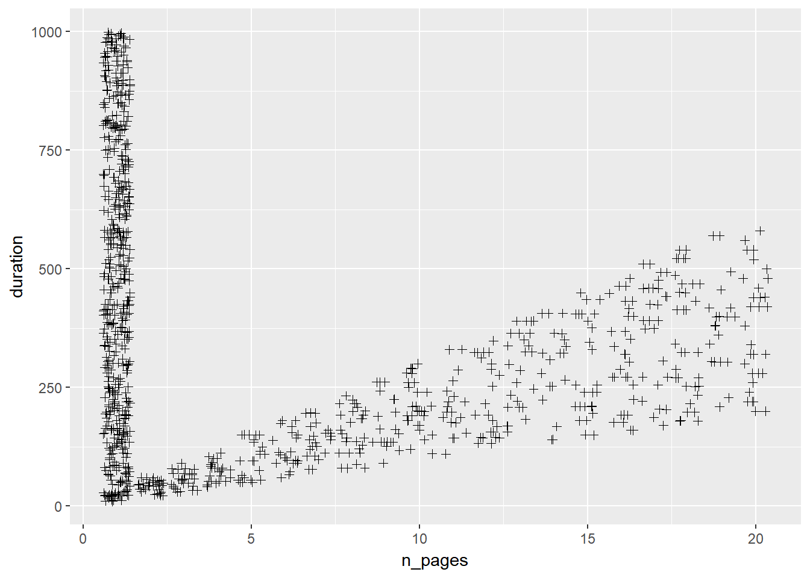
Map Size to Variable
ggplot(mtcars) +
geom_point(aes(disp, mpg, size = hp), color = 'blue',
position = 'jitter')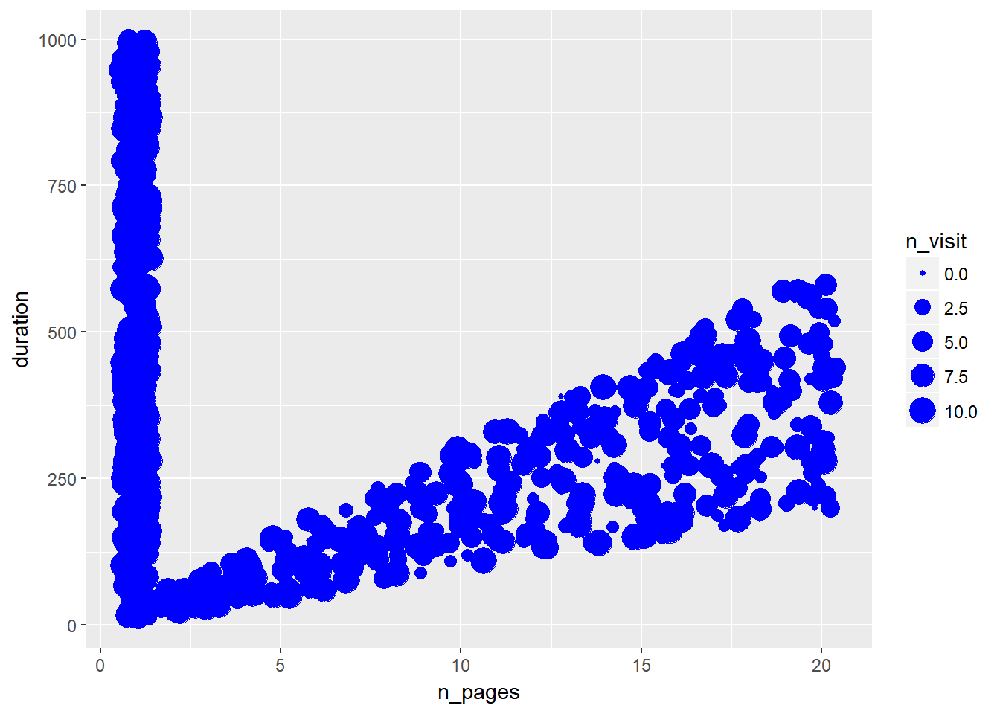
Specify Value for Size
ggplot(mtcars) +
geom_point(aes(disp, mpg), size = 3,
position = 'jitter')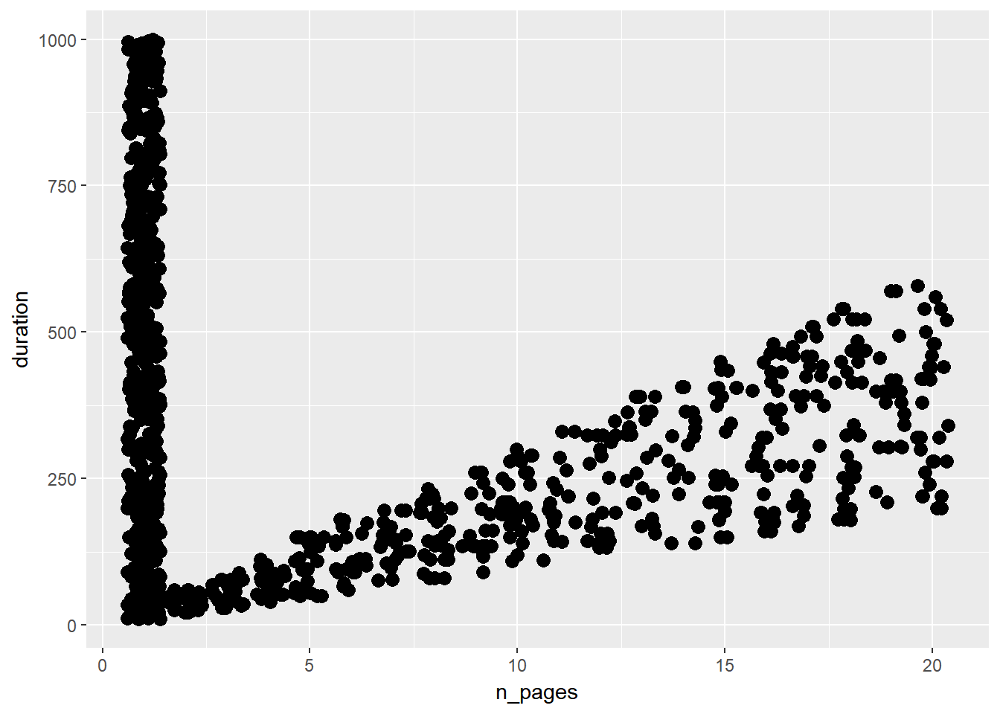
Regression Line
ggplot(mtcars, aes(disp, mpg)) +
geom_point(position = 'jitter') +
geom_smooth(method = 'lm', se = FALSE)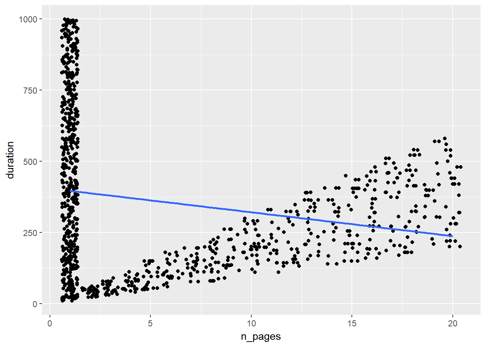
Regression Line - Conf. Interval
ggplot(mtcars, aes(disp, mpg)) +
geom_point(position = 'jitter') +
geom_smooth(method = 'lm', se = TRUE)
Regression Line - Loess Method
ggplot(mtcars, aes(disp, mpg)) +
geom_point(position = 'jitter') +
geom_smooth(method = 'loess', se = FALSE)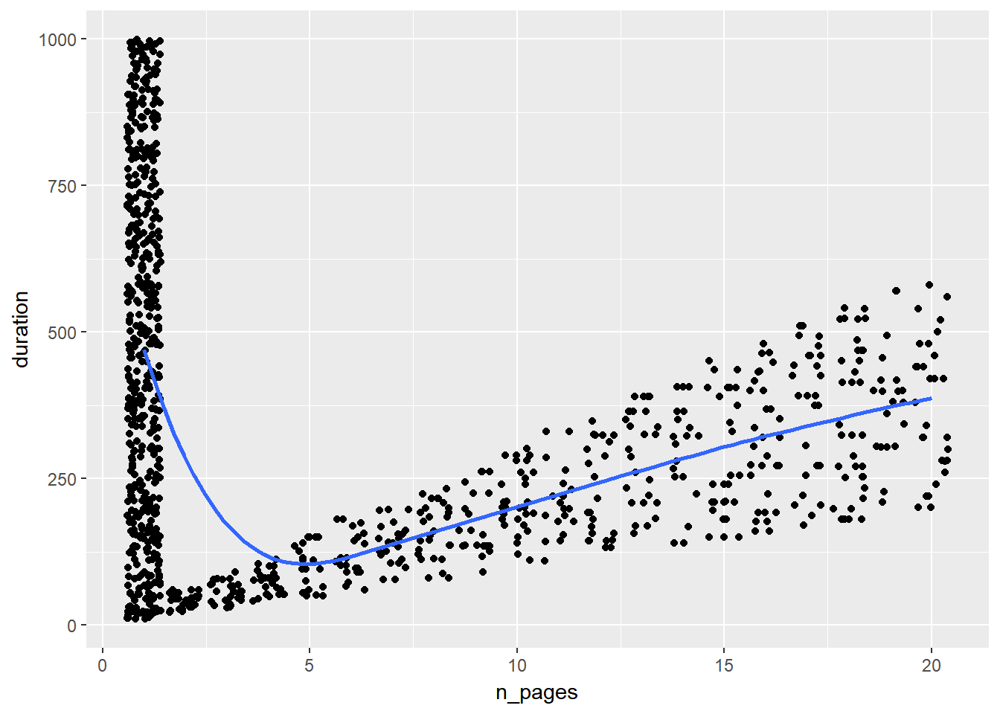
Fit Line - Intercept & Slope
ggplot(mtcars, aes(disp, mpg)) +
geom_point(position = 'jitter') +
geom_abline(slope = 29.59985, intercept = -0.04122)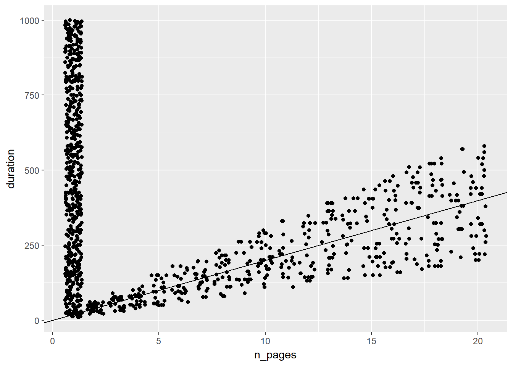
Summary
In this post, we learnt to:
- build scatter plots
- map aesthetics to variables
- modify axis and legend
- fit regression line